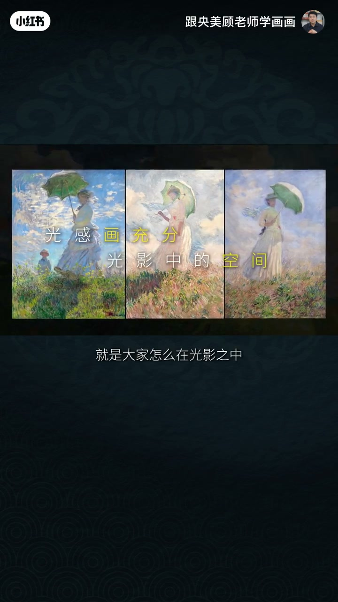
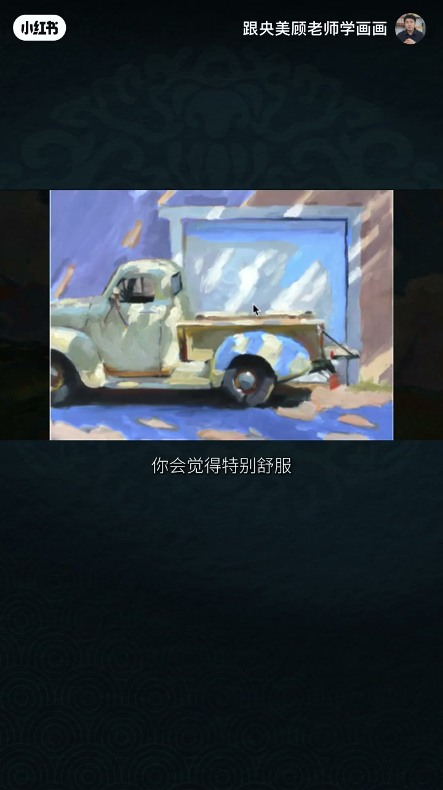
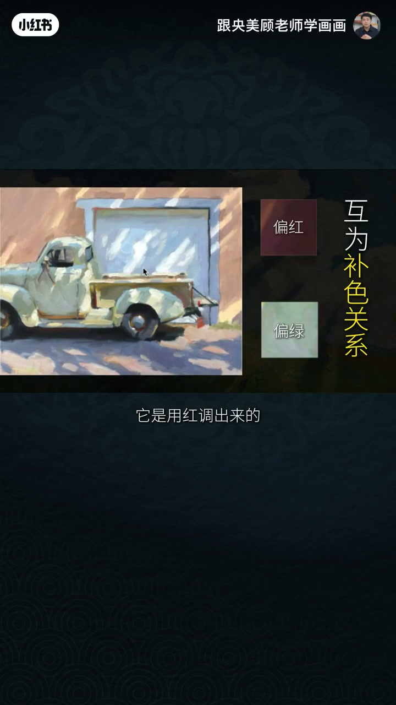
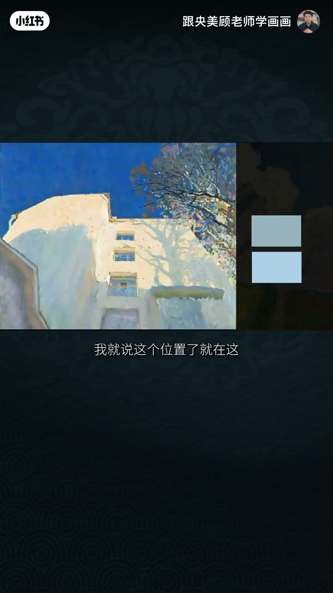
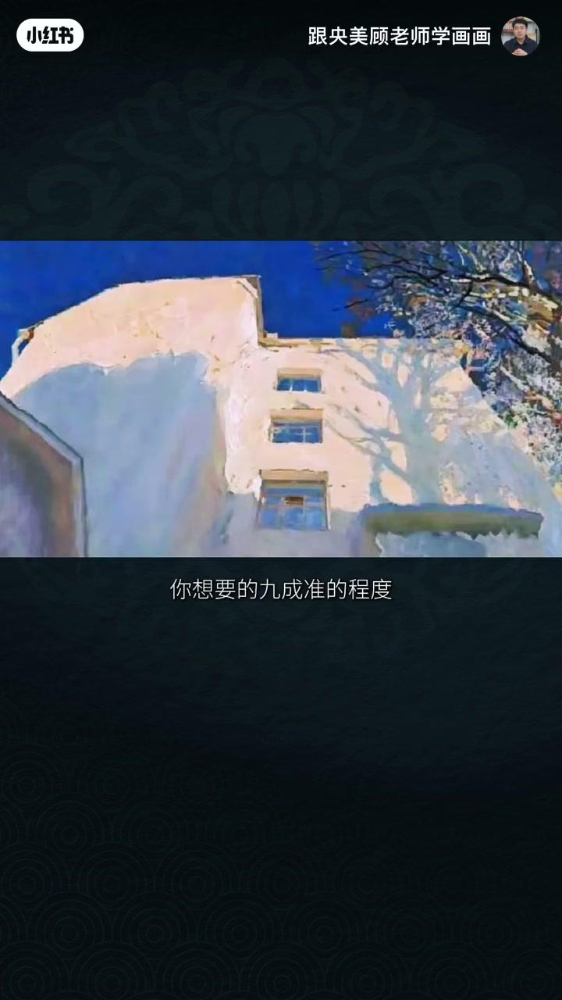
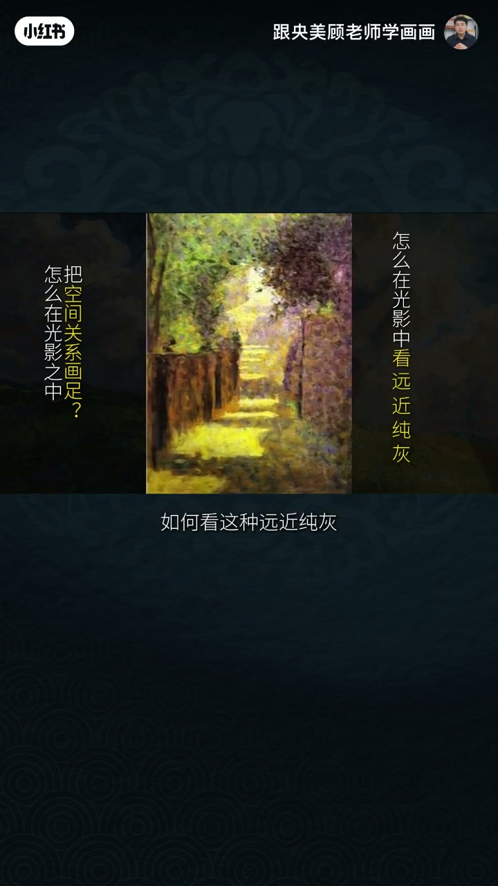
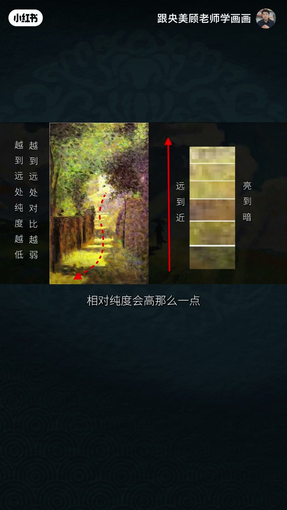
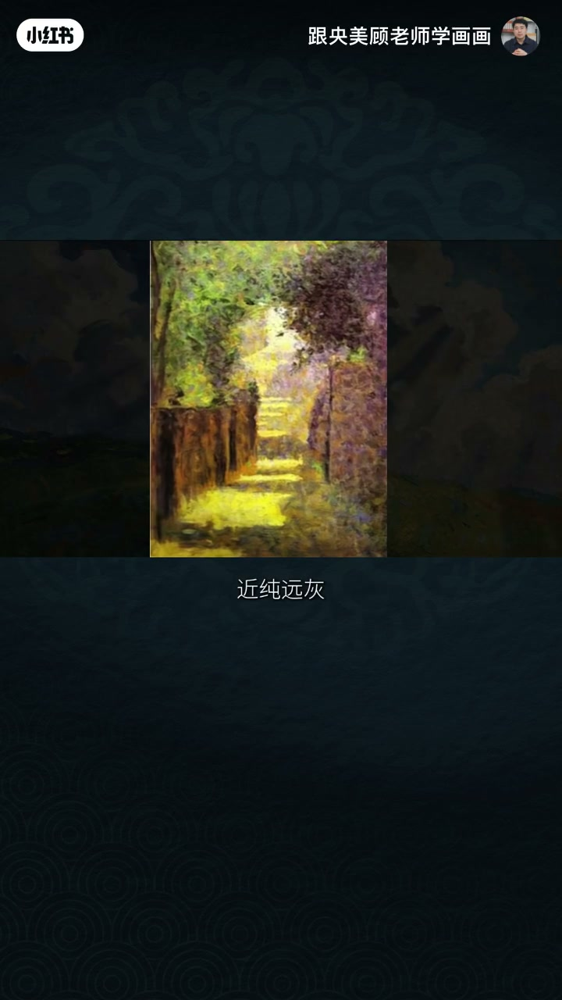

内容要点
画色彩,光是灵魂,光是这个色彩的灵魂你要把光画好,光感发充分看这个光的味道然后再看这个光影里面的空间大家怎么在光影之中能把空间关系发足,发充分,发到位这个是我们今天的重点看这个光的味道画得特别足,特别到位就整个光影氛围其实这个东西没有那么复
你又会感觉到,这个绿的刚好它再绿一点就跳了再不绿一点就缺少了补色关系这个它不是用纸石它是用红挑出来紫红色里边稍微灰一点就刚刚好这个红的味道和感觉除了把光影,把和谐度画出来试试能不能让它再好看一点有空间的情况下颜色做微调做到更充分更饱满我就来
只有把所有颜色先堆上然后在画中调你开始只能画出7成准当颜色完全铺完的时候你才可以就这画面把这个颜色调整到你想要的9成准的程度对,如果不是那色彩关系根本就出不来我们先把光影关系画对了然后再看的就是空间看这个大家怎么在光影之中能把空间关系画足画
近到远的受背光关系中我们来看就是把投影提出来由近到远它除了亮暗变化以外越到远处纯度越低对吗对比越弱越到近处相对纯度会高那么一点里边会出现比较纯的色点那种橘黄色的色点比较足的纯的色点但是到远处就没有那么多对,所以从近到远色彩中除了受背光的冷暖
画色彩,光是灵魂,光是这个色彩的灵魂你要把光画好,光感发充分看这个光的味道然后再看这个光影里面的空间大家怎么在光影之中能把空间关系发足,发充分,发到位这个是我们今天的重点看这个光的味道画得特别足,特别到位就整个光影氛围其实这个东西没有那么复
00:00–00:54画色彩,光是灵魂,光是这个色彩的灵魂你要把光画好…
画色彩,光是灵魂,光是这个色彩的灵魂你要把光画好,光感发充分看这个光的味道然后再看这个光影里面的空间大家怎么在光影之中能把空间关系发足,发充分,发到位这个是我们今天的重点看这个光的味道画得特别足,特别到位就整个光影氛围其实这个东西没有那么复杂就一小车,特简单的形一个门但是加上这样的光影你会觉得特别舒服特别丰富特别耐看这张画所以光给了这墙的这颜色和车的颜色这叫补色关系,偏红偏绿然后这两种补色放到一起


00:54–01:49你又会感觉到,这个绿的刚好它再绿一点就跳了再不绿…
你又会感觉到,这个绿的刚好它再绿一点就跳了再不绿一点就缺少了补色关系这个它不是用纸石它是用红挑出来紫红色里边稍微灰一点就刚刚好这个红的味道和感觉除了把光影,把和谐度画出来试试能不能让它再好看一点有空间的情况下颜色做微调做到更充分更饱满我就来说一下技法先看看色的技法比如这两个颜色哪个是这个影子呢我就说这个位置了就在这儿这个才是看这个是不是明显过量但实际上在调色盘上你会觉得这个才是对的颜色我们人眼是有误差的


01:49–02:43只有把所有颜色先堆上然后在画中调你开始只能画出7…
只有把所有颜色先堆上然后在画中调你开始只能画出7成准当颜色完全铺完的时候你才可以就这画面把这个颜色调整到你想要的9成准的程度对,如果不是那色彩关系根本就出不来我们先把光影关系画对了然后再看的就是空间看这个大家怎么在光影之中能把空间关系画足画充分画到位对,具体的知识点就是咱们在光影中如何看这种远近纯灰还有从近到远的冷暖变化这很明显近到远看受光背光


02:43–03:38近到远的受背光关系中我们来看就是把投影提出来由近…
近到远的受背光关系中我们来看就是把投影提出来由近到远它除了亮暗变化以外越到远处纯度越低对吗对比越弱越到近处相对纯度会高那么一点里边会出现比较纯的色点那种橘黄色的色点比较足的纯的色点但是到远处就没有那么多对,所以从近到远色彩中除了受背光的冷暖变化除了整个光色氛围比较和谐以外仔细看它的变化是什么就是它会有纯灰变化近纯远灰当关系对了你想让它真的有空间看看纯灰变化看看冷暖变化这个空间就容易出来


完整转录（98段）
Whisper medium · 中文 · 已转简体，可能有识别误差。
画色彩,光是灵魂,光是这个色彩的灵魂
你要把光画好,光感发充分
看这个光的味道
然后再看这个光影里面的空间
大家怎么在光影之中
能把空间关系发足,发充分,发到位
这个是我们今天的重点
看这个光的味道
画得特别足,特别到位
就整个光影氛围
其实这个东西没有那么复杂
就一小车,特简单的形
一个门
但是加上这样的光影
你会觉得特别舒服
特别丰富
特别耐看这张画
所以光给了
这墙的这颜色
和车的颜色
这叫补色关系,偏红偏绿
然后这两种补色放到一起
你又会感觉到,这个绿的刚好
它再绿一点就跳了
再不绿一点就缺少了补色关系
这个它不是用纸石
它是用红挑出来
紫红色里边稍微灰一点
就刚刚好
这个红的味道和感觉
除了把光影,把和谐度画出来
试试能不能让它再好看一点
有空间的情况下
颜色做微调
做到更充分更饱满
我就来说一下技法
先看看色的技法
比如这两个颜色
哪个是这个影子呢
我就说这个位置了
就在这儿
这个才是
看这个是不是明显过量
但实际上在调色盘上
你会觉得
这个才是对的颜色
我们人眼是有误差的
只有把所有颜色先堆上
然后在画中调
你开始只能画出7成准
当颜色完全铺完的时候
你才可以就这画面
把这个颜色调整到
你想要的9成准的程度
对,如果不是
那色彩关系根本就出不来
我们先把光影关系画对了
然后再看的就是空间
看这个
大家怎么在光影之中
能把空间关系画足
画充分
画到位
对,具体的知识点就是
咱们在光影中
如何看这种远近纯灰
还有从近到远的冷暖变化
这很明显
近到远
看受光
背光
近到远的受背光关系中
我们来看就是
把投影提出来
由近到远
它除了亮暗变化以外
越到远处纯度越低
对吗
对比越弱
越到近处
相对纯度会高那么一点
里边会出现比较纯的色点
那种橘黄色的色点
比较足的纯的色点
但是到远处就没有那么多
对,所以从近到远
色彩中
除了受背光的冷暖变化
除了整个光色氛围比较和谐以外
仔细看它的变化
是什么
就是它会有纯灰变化
近纯远灰
当关系对了
你想让它真的有空间
看看纯灰变化
看看冷暖变化
这个空间就容易出来